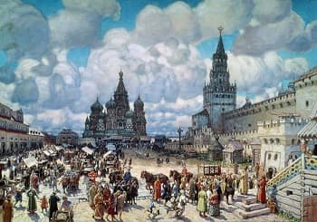
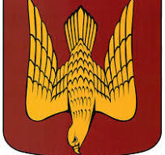
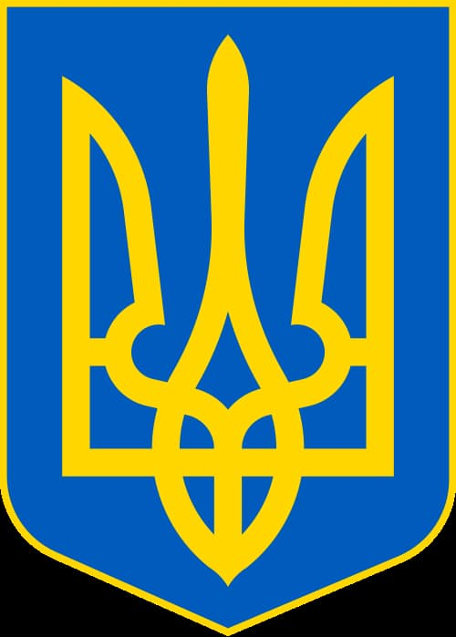

Татарское нашествие до Новгородской земли не докатилось. Но общей участи Новгород не избежал.
Вектор развития общества сменился с европейского на азиатскую деспотию и азиатскую рабскую покорность. И для нас, сегодняшних, холопское сознание типично. Самоуважение редкостно. Удивительно, как один человек, только за время одной жизни, создал модель общества, по которой скоро 1000 лет, живет наша страна. Этот человек Чингиз хан. Модель - ордынская.
С началом формирования феодальных земель территория становится предметом споров и пограничных конфликтов между нарождающимися государствами, княжествами, рыцарскими орденами. Какие только доспехи не звякали над этой землей ?!
В хрониках сохранился факт замужества шведской принцессы Ингегарды с новгородским князем Ярославом (Мудрым) в 1019 году. При том, что уже была договоренность о ее браке с королем Норвегии. В аддаптации к словянской речи она стала Ириной. В приданое принцесса получила город Старая Ладога с прилегающими землями, которые получили название Ингерманландия (земля Ингегарды). Вероятно, есть связь между именем той Ирины и храмом Святой Ирины в Волгово. Это имя с названием местности удивительно перекликаются. Сегодня Ингерманландия (или Ингрия) - этнокультурный исторический регион расположенный между Карельским перешейком и Эстонией.
С 12 по 14 века это один из самых густонаселенных районов Новгородской земли. Это период, полностью накрываемый монголо-татарским игом.
Во все времена Ингрия представляла особую ценность в экономическом и стратегическом отношениях: выход к Балтийскому морю, контроль за торговыми путями между севером и югом (по Нарове, Луге, Неве, Волхову, Вуоксе), выход в Онежское озеро и Белое море по Свири, богатые зверем леса, контроль за богатым рыбой Ладожским озером.
Начиная с 1240 года возводится и переходит между ливонцами, новгородцами, шведами крепость Копорье (20 км от границы района). В 1329 году датчанами строится Нарвский замок. Переходит от ливонского ордена к тевтонскому, завоевывается новгородцами, отвоевывается шведами, переходит к России (40 км от границ района).
В 1323 году на берегу Чудского озера, разделявшего Русь и Ливонию, строится псковскими князьями крепость Гдов. Неоднократно осаждается и переходит из рук в руки между шведами и псковичами. (80 км от границ района). В 1384 году строится новогородцами крепость Ям с не менее кровопролитной историей (20 км от границ района). В 1492 году возводится крепость Иван-город. (40 км от границ района).
C 1136 по 1478 год Ингерманландия принадлежит Новгородской республике. Республике, ненавидимой ордынской Москвой за дух вольного Ганзейского города, за дерзость самоуправления. В наши дни в районе Копорья находят новгородские гривны. С 1478 по 1617 год под властью Московии.
С 1617 по 1721 год (столетие) тут была Швеция. Можно предположить, топонимы местности во многом шведские, если взглянуть на КАРТУ 17-го века. И выглядел край по европейски, судя по готическим шпилям лютеранских кирх на карте.
Словообразование топонимов русского языка на базе уже имеющихся, процесс естественный. Так в славянской транскрипции Kupanitsa стали Губаницы, Ustiaby - Устье, Mashagarka - Мазаная Горка.
Сам город Ладога, резиденция Рюрика, носил скандинавское имя Aldaugja, затем трансформировался в Альдогу, наконец в нашу Ладогу, чтобы язык не сломать. И гербом имел логотип- атакующий сокол. Это герб Рюриков, который сегодня преобразился в украинский трезубец.
А, что не так?


Правителями Новгорода были Рюрик и Олег. Правителями Киева следующие Рюриковичи: - Ольга, Игорь, Святослав и их потомки. Так и герб стилизовался.
По ходу времени язык меняется, что естественно.
Неестественно, как сегодня слово "похоже" подменилось словом "походу", не имея между смыслами ничего общего.
Начиная с 1721 года, с окончанием Северной войны, земли переходят к России. Любопытно, что именем "Ингерманланд" Петр I назвал линейный корабль, спущенный на воду в 1715 году с верфи Санкт-Петербургского адмиралтейства и ставший флагманом молодого русского флота.
В период с 18-го по 20-й век территория района относится к Ямбургскому уезду Санкт-Петербургской губернии (Ямбург, точнее Ям - родное название города Кингисепп, а уезд почти соответствует площади Ингрии). С 1708 года - владения князя Меньшикова. После его опалы край переходит в государственную казну.
В дальнейшем отдельные земли получает в награду, или приобретает, российское дворянство. Среди помещиков преобладают выходцы из прибалтийской знати. Эти фамилии верно служили России и составили ее славу: Веймарны, Корфы, Врангели, Блоки, Унгерны, Рерихи, Довре, Велио, Тизенгаузены. Выбор территории, вероятно, объясняется близостью к прибалтийским родственниками. И район, в просторечии, получает наименование "остзейского уезда".
Но не только они: в Беседе имение князей Оболенских, в Елизаветино дворец князей Трубецких. И множество помещиков с русскими фамилиями. Как правило, поместья представляли собой заботливо ухоженные парковые ансамбли с красивыми и прочными каменными усадьбами-дворцами с булыжными стенами и ухоженными рукотворными прудами.
Так вспоминает о своем детстве в Терпилицах Николай Егорович Врангель (отец генерала П.Н. Врангеля) :
"Обследовав в доме каждый уголок, который и так нам был известен до мелочей, мы бежим в сад, наполненный цветами. Мы гуляем в обширном парке, с захватывающим дыхание ужасом забираемся в глубину парка, где растут столетние сосны и ели и где сейчас, наверно, живут медведи и волки, мы бегаем и играем в мягкой траве, лазаем на деревья, залезаем в оранжереи, где так много сочных персиков и слив." ( событие ~ 1855 года).
К нашему времени от тех усадеб остались лишь жалкие развалины, но примером типажа может служить лютеранская кирха в Губаницах.
К сожалению, примеров персиков в оранжереях найти не удалось.